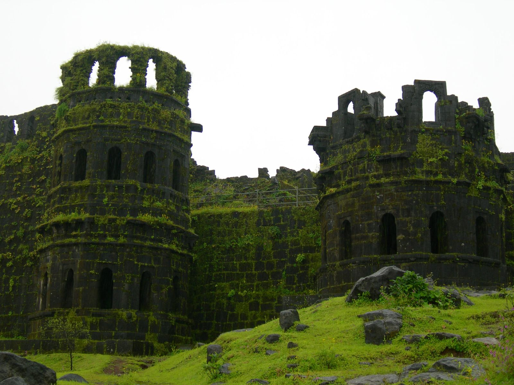
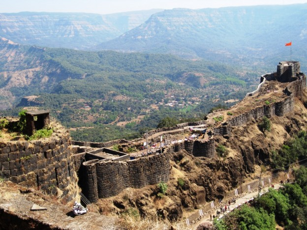

The Rajmudra was the royal seal of the Maratha Empire and Chhatrapati Shivaji Maharaj. Its inscription in Sanskrit, "प्रतिपच्चंद्रलेखेव वर्धिष्णुर्विश्ववंदिता शाहसुनोः शिवस्यैषा मुद्रा भद्राय राजते" (pratipaccandralekheva vardhiṣṇurviśvavanditā śāhasūnoḥ śivasyaiṣā mudrā bhadrāya rājate), translates to "This Seal of Shivaji, the Son of Shahaji, Increasing in size like the moon of Pratipada (the first day after the moonless night), will be worshiped by the world & will shine only for the well-being of people". It symbolized Shivaji's dream of Swarajya (self-rule) and embodied principles of growth, universal acclaim, and welfare for his people."Rajmudra" means the "Royal Seal" or "Great Seal" of Chhatrapati Shivaji Maharaj. It is a symbol of his dream for Swarajya (self-rule) and carries a prophetic message: "The glory of this Mudra [Seal] of Shahaji's son Shivaji will grow like the first-day moon; it will be worshipped by the world and will shine only for the well-being of people".
The owner and founder of the Rajmudra Group is Dnyaneshwar Pachundkar Patil. He established the group, beginning with Rajmudra Tours & Travels and expanding it into a diverse portfolio of companies in sectors such as transportation, green energy, and eco-friendly products.
Key aspects of the Rajmudra:
Royal Seal:
It was the official royal seal used on letters and ordinances by Shivaji Maharaj.
Symbolism of Growth:
The analogy of the crescent moon signifies continuous growth and expansion in glory and influence.
Raigad-fort:-
Raigad Fort is a historic hill fortress in Maharashtra, India, built by Chhatrapati Shivaji Maharaj in the 17th century and served as the capital of the Maratha Empire from 1674 to 1818. Located atop a 820-meter high hill in the Sahyadri mountains, the fort is historically known as Rairi.

shivaneri-fort:-
hivneri Fort is a historic military fort near Junnar in Pune, Maharashtra, famous as the birthplace of Chhatrapati Shivaji Maharaj, the founder of the Maratha Empire. This triangular-shaped hill fort features seven well-defended gates, steep cliffs for defense, and contains water tanks, wells, and key monuments such as the Badami Talav

sihagad-fort:-
Sinhagad Fort is a historic hill fort in Maharashtra, India, near Pune, notable for its scenic beauty, architectural features like the Kalyan Darwaja, and its pivotal role in the Maratha Empire, particularly the Battle of Sinhagad in 1670, led by Maratha general Tanaji Malusare.
Purandar-Fort:-
Purandar Fort is a historic mountain fortress located 50 km southeast of Pune in Maharashtra, India, renowned for its strategic importance during the Maratha Empire, hosting the birth of Sambhaji Maharaj, and featuring as the site of a significant treaty with the Mughals in 1665. The fort.
Pratapgad-Fort:-
Pratapgad Fort is a historic Maratha fort in Maharashtra, India, built by Chhatrapati Shivaji Maharaj in 1656 near Mahabaleshwar. It is most famous for the decisive Battle of Pratapgarh on November 10, 1659, where Shivaji's forces defeated the Adilshahi general Afzal Khan. Visitors can explore the fort, which includes the Bhavani Temple